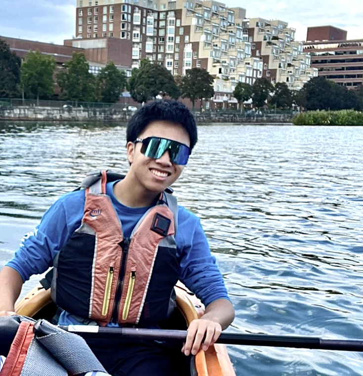

Moments from a Dvořák piano trio performance, capturing the energy of live
chamber music.
Quiet still life of a cello between rehearsals, highlighting textures and light.
A wide shot of the concert stage moments before the audience arrives.

Outdoor portrait session emphasizing natural light and expressive posing.